ARIMA
비정상 시계열, 차분 필요
female <- scan('female.txt')
female.ts <- ts(female)
ggtsdisplay(female.ts)
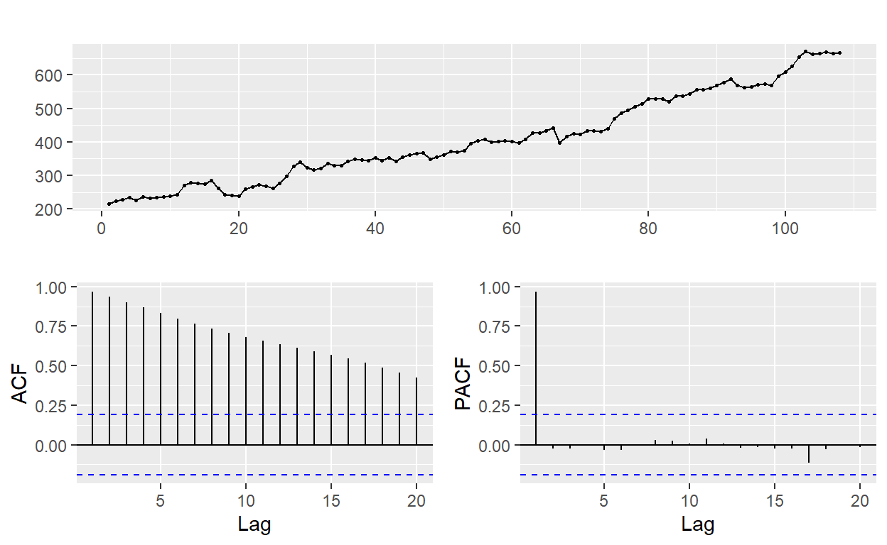
일반 차분
- white noise 만족
- p = 0, q = 0
Model fitting
fit <- Arima(female, order = c(0, 1, 0), include.drift = T)
checkresiduals(fit)
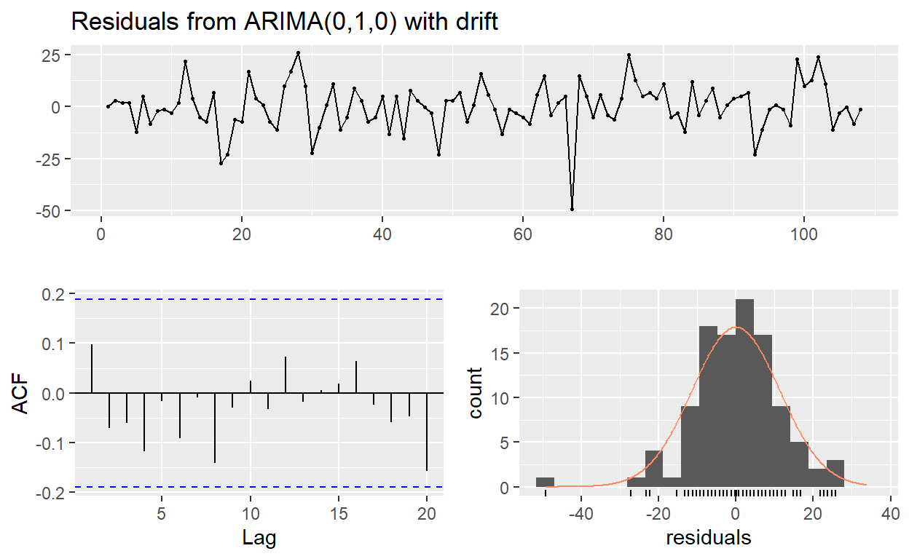
Ljung-Box test
data: Residuals from ARIMA(0,1,0) with drift
Q* = 7.1676, df = 9, p-value = 0.6197
Model df: 1. Total lags used: 10과대적합
2.5 % 97.5 %
ar1 -0.09026514 0.2851598
drift 1.85683163 6.5762383 2.5 % 97.5 %
ma1 -0.08681113 0.3124909
drift 1.84910777 6.5857555# ARIMA(0, 1, 0) 확정 NAAuto.arima
auto.arima(female, stepwise = F)
Series: female
ARIMA(0,1,0) with drift
Coefficients:
drift
4.215
s.e. 1.093
sigma^2 estimated as 129: log likelihood=-411.34
AIC=826.68 AICc=826.8 BIC=832.03auto.arima(female, ic = 'bic', stepwise = F)
Series: female
ARIMA(0,1,0) with drift
Coefficients:
drift
4.215
s.e. 1.093
sigma^2 estimated as 129: log likelihood=-411.34
AIC=826.68 AICc=826.8 BIC=832.03예측
원자료에 대한 예측
Forecast method: ARIMA(0,1,0) with drift
Model Information:
Series: female
ARIMA(0,1,0) with drift
Coefficients:
drift
4.215
s.e. 1.093
sigma^2 estimated as 129: log likelihood=-411.34
AIC=826.68 AICc=826.8 BIC=832.03
Error measures:
ME RMSE MAE MPE MAPE
Training set 0.001960972 11.25385 8.279046 -0.1344574 2.231458
MASE ACF1
Training set 0.9030153 0.09833436
Forecasts:
Point Forecast Lo 80 Hi 80 Lo 95 Hi 95
109 671.2150 656.6571 685.7728 648.9507 693.4792
110 675.4299 654.8421 696.0178 643.9435 706.9163
111 679.6449 654.4300 704.8597 641.0820 718.2077
112 683.8598 654.7442 712.9754 639.3313 728.3883
113 688.0748 655.5225 720.6270 638.2904 737.8591
114 692.2897 656.6305 727.9489 637.7537 746.8258
115 696.5047 657.9883 735.0210 637.5990 755.4103
116 700.7196 659.5439 741.8953 637.7468 763.6924
117 704.9346 661.2611 748.6080 638.1418 771.7273
118 709.1495 663.1137 755.1854 638.7438 779.5553Seasonal ARIMA Model
Load data
time series plot
정상성 확인 2가지
- 동일분산 확인
- 추세 확인
동일 분산 확인
분산 증가, 로그 변환 필요
plot(tour.ts)
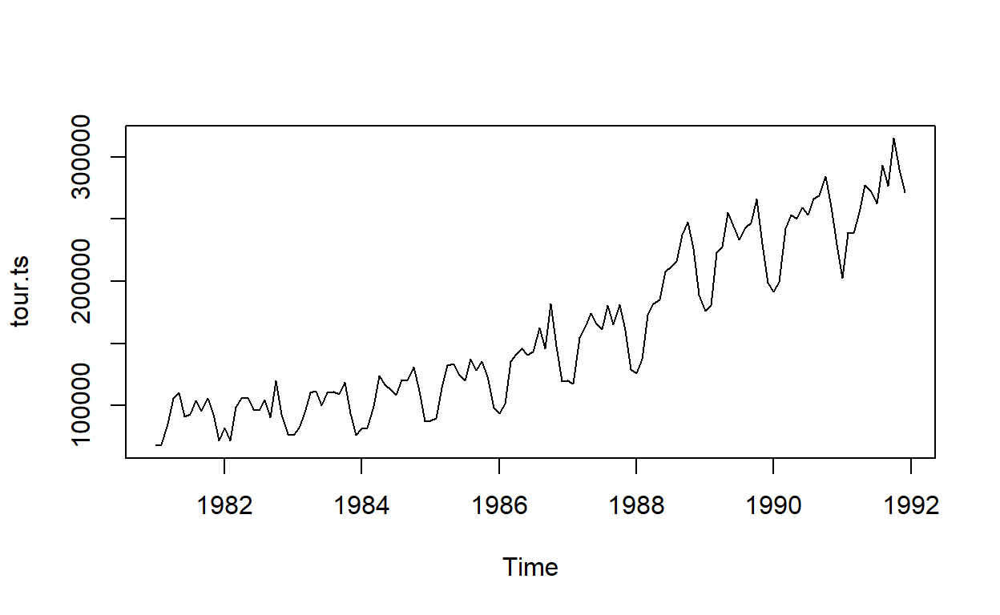
분산 안정화 변환
추세 확인
일반 차분, 계절 차분 필요
d = 1일 때 (일반 차분)
추가적으로 계절 차분 필요
tour_1 <- diff(lntour)
ggtsdisplay(tour_1, lag.max = 48)
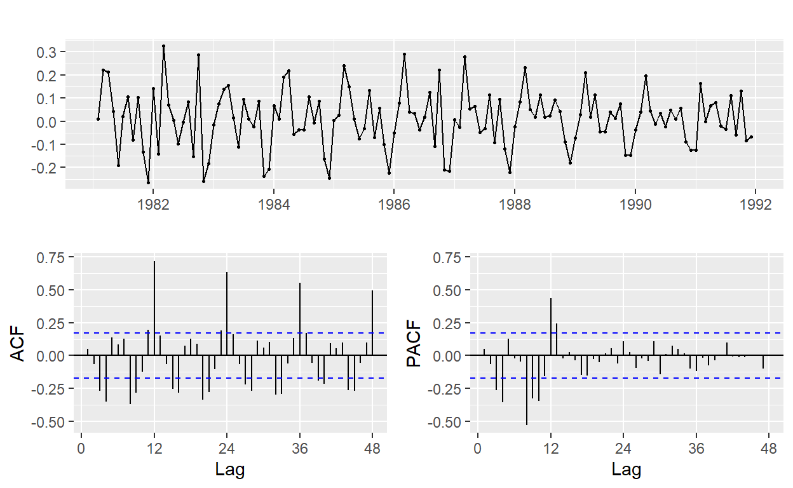
D = 1일 때
추가적인 일반 차분이 필요해보임
d = 1, D = 1일 때
d = 1, D = 1로 결정
tour_1_12 <- diff(tour_1, lag = 12)
ggtsdisplay(tour_1_12, lag.max = 48)
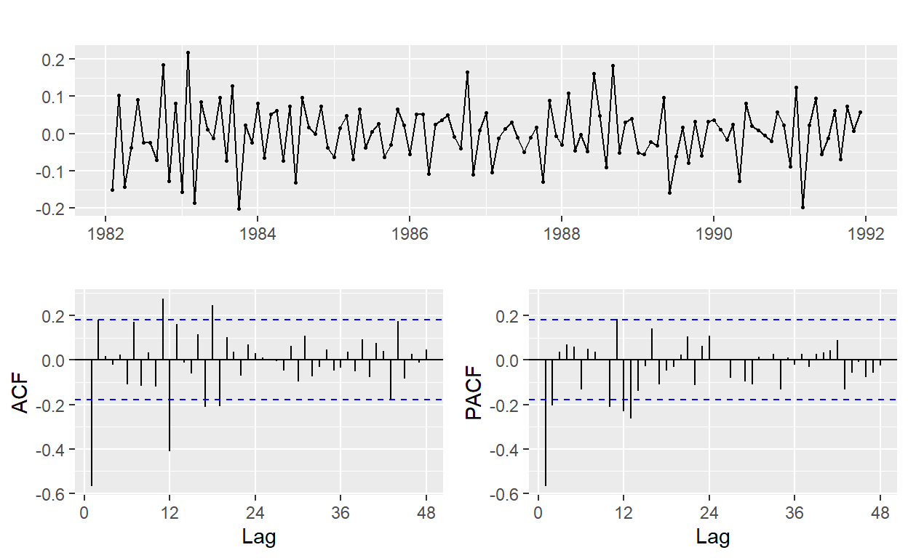
Model fitting
비계절형 요소
- ACF 절단, PACF 감소 : p = 0, q = 1
- ACF 감소, PACF 절단 : p = 2, q = 0
계절형 확인 방법
\(AR(1)_{12}\)
- ACF : 계절주기 12의 배수에 해당하는 시차에 따라 지수적으로 감소
- PACF : 시차 12에서만 값을 갖고 그 이외의 사차에서는 0
\(MA(1)_{12}\)
- ACF : 시차 12에서만 값을 갖고 그 이외의 사차에서는 0
- PACF : 계절주기 12의 배수에 해당하는 시차에 따라 지수적으로 감소
\(ARMA(1, 1)_{12}\)
- ACF : 12시차 이후부터 계절주기 12의 배수의 해당되는 시차에 따라 지수적으로 감소
- PACF : 12시차 이후부터 계절주기 12의 배수의 해당되는 시차에 따라 지수적으로 감소
계절형 확인
- ACF 12차 근처에서만 유의적 : P = 0, Q = 1
- PACF 12차 근처에서만 유의적 : P = 1, Q = 0
비계절형 확인
ACF 절단, PACF 감소 : p = 0, q = 1
ACF 감소, PACF 절단 : p = 2, q = 0
최종 후보 모형
\(ARIMA(0, 1, 1)(0, 1, 1)_{12}\)
\(ARIMA(0, 1, 1)(1, 1, 0)_{12}\)
\(ARIMA(2, 1, 0)(0, 1, 1)_{12}\)
\(ARIMA(2, 1, 0)(1, 1, 0)_{12}\)
\(ARIMA(0, 1, 1)(0, 1, 1)_{12}\)
fit1 <- Arima(lntour, order = c(0, 1, 1),
seasonal = list(order = c(0, 1, 1), period = 12))
checkresiduals(fit1)
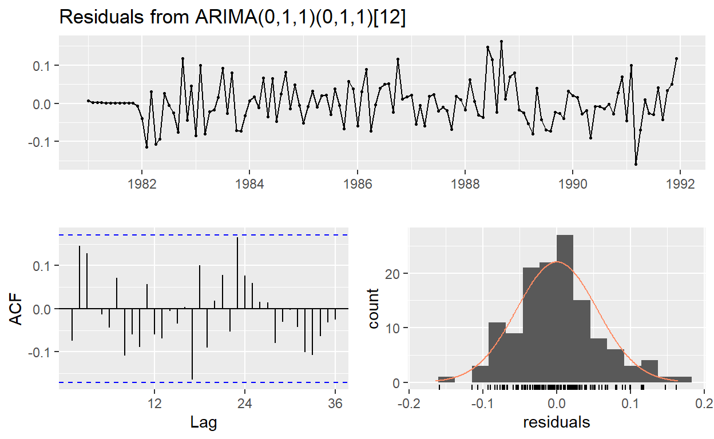
Ljung-Box test
data: Residuals from ARIMA(0,1,1)(0,1,1)[12]
Q* = 26.06, df = 22, p-value = 0.2491
Model df: 2. Total lags used: 24과대 적합 확인
\(ARIMA(0, 1, 1)(0, 1, 1)_{12}\)
fit1_1 <- Arima(lntour, order = c(1, 1, 1),
seasonal = list(order = c(0, 1, 1), period = 12))
fit1_2 <- Arima(lntour, order = c(0, 1, 2),
seasonal = list(order = c(0, 1, 1), period = 12))
confint(fit1)
2.5 % 97.5 %
ma1 -0.7168817 -0.4432093
sma1 -0.7075792 -0.3973742confint(fit1_1) # 추가된 모수 유의적 NA 2.5 % 97.5 %
ar1 -0.6141189 -0.07646367
ma1 -0.6019970 -0.07213300
sma1 -0.6757900 -0.36348852confint(fit1_2) # 추가된 모수 유의적NA 2.5 % 97.5 %
ma1 -0.84863210 -0.5006825
ma2 0.04584469 0.4197128
sma1 -0.67412800 -0.3580535checkresiduals(fit1_1)
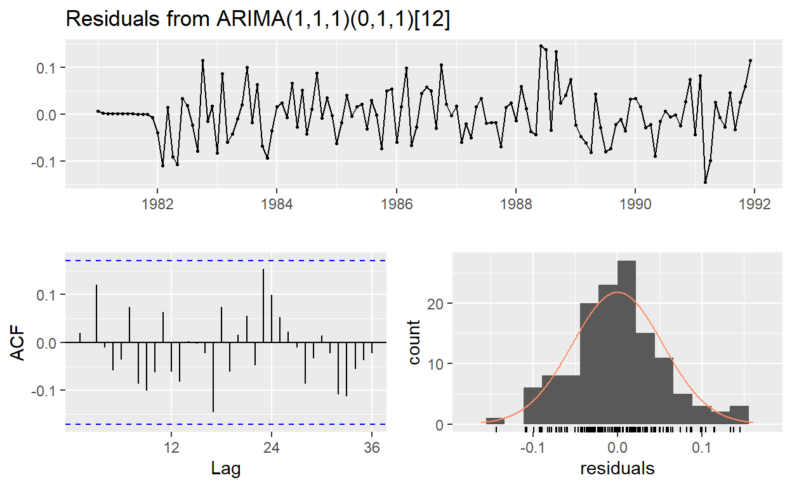
Ljung-Box test
data: Residuals from ARIMA(1,1,1)(0,1,1)[12]
Q* = 19.807, df = 21, p-value = 0.5335
Model df: 3. Total lags used: 24checkresiduals(fit1_2)
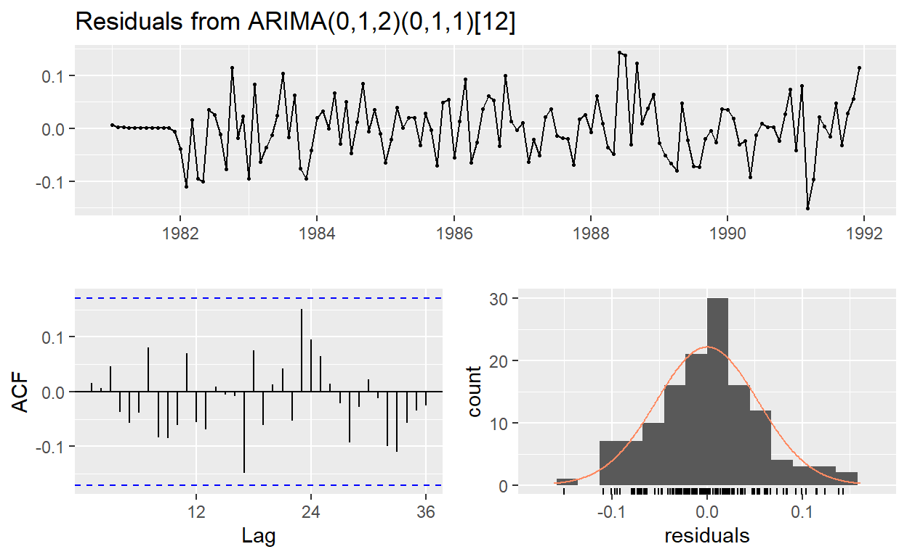
Ljung-Box test
data: Residuals from ARIMA(0,1,2)(0,1,1)[12]
Q* = 17.468, df = 21, p-value = 0.6824
Model df: 3. Total lags used: 24confint(Arima(lntour, order = c(1, 1, 2),
seasonal = list(order = c(0, 1, 1), period = 12))) # 추가된 모수 비유의 NA 2.5 % 97.5 %
ar1 -0.7576853 0.48124313
ma1 -1.1513542 0.05538992
ma2 -0.2314544 0.55715140
sma1 -0.6724509 -0.35743032confint(Arima(lntour, order = c(2, 1, 1),
seasonal = list(order = c(0, 1, 1), period = 12))) # 추가된 모수 비유의 NA 2.5 % 97.5 %
ar1 -1.4005757 0.05563757
ar2 -0.6505574 0.21547715
ma1 -0.7633223 0.73372547
sma1 -0.6770033 -0.36266535confint(Arima(lntour, order = c(0, 1, 3),
seasonal = list(order = c(0, 1, 1), period = 12))) # 추가된 모수 비유의 NA 2.5 % 97.5 %
ma1 -0.88113628 -0.5041239
ma2 0.03417003 0.5055626
ma3 -0.24727265 0.1398392
sma1 -0.67243530 -0.3582209# fit1_1, fit1_2 예측에 사용 가능 NA\(ARIMA(0, 1, 1)(1, 1, 0)_{12}\)
fit2 <- Arima(lntour, order = c(0, 1, 1),
seasonal = list(order = c(1, 1, 0), period = 12))
checkresiduals(fit2) # 백색잡음 오차 가정 위반 NA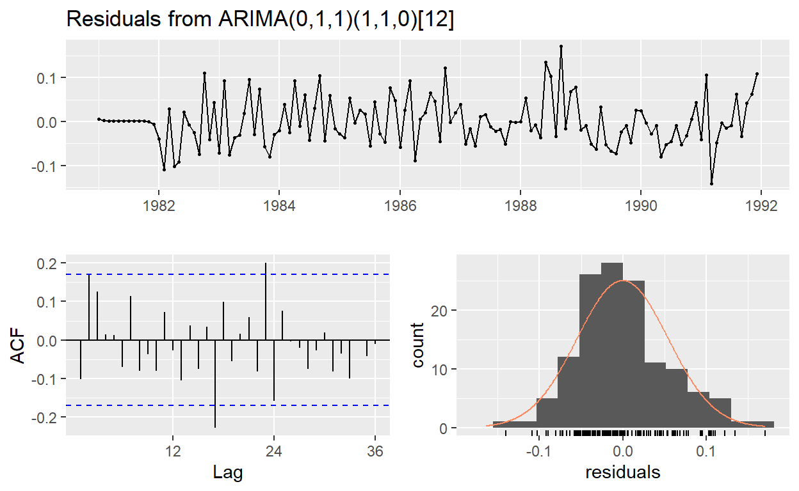
Ljung-Box test
data: Residuals from ARIMA(0,1,1)(1,1,0)[12]
Q* = 38.217, df = 22, p-value = 0.01732
Model df: 2. Total lags used: 24과대적합
\(ARIMA(0, 1, 1)(1, 1, 0)_{12}\)
fit2_1 <- Arima(lntour, order = c(1, 1, 1),
seasonal = list(order = c(1, 1, 0), period = 12))
fit2_2 <- Arima(lntour, order = c(0, 1, 2),
seasonal = list(order = c(1, 1, 0), period = 12))
confint(fit2_1) # 추가된 모수 유의 NA 2.5 % 97.5 %
ar1 -0.6244618 -0.1257088
ma1 -0.6016499 -0.1026214
sar1 -0.6862031 -0.3682476confint(fit2_2) # 추가된 모수 유의NA 2.5 % 97.5 %
ma1 -0.88940432 -0.5453766
ma2 0.08103535 0.4425904
sar1 -0.68381121 -0.3633908checkresiduals(fit2_1)
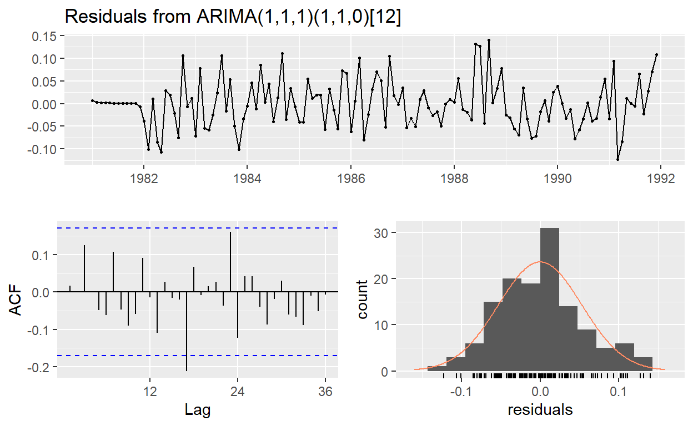
Ljung-Box test
data: Residuals from ARIMA(1,1,1)(1,1,0)[12]
Q* = 24.433, df = 21, p-value = 0.2726
Model df: 3. Total lags used: 24checkresiduals(fit2_2)
Ljung-Box test
data: Residuals from ARIMA(0,1,2)(1,1,0)[12]
Q* = 22.927, df = 21, p-value = 0.3479
Model df: 3. Total lags used: 24추가 과대적합
\(ARIMA(1, 1, 1)(1, 1, 0)_{12}\), \(ARIMA(0, 1, 2)(1, 1, 0)_{12}\)
confint(Arima(lntour, order = c(1, 1, 2),
seasonal = list(order = c(1, 1, 0), period = 12))) # 추가된 모수 비유의 NA 2.5 % 97.5 %
ar1 -0.7327746 0.4113774
ma1 -1.1291821 -0.0140854
ma2 -0.2036577 0.5600746
sar1 -0.6839650 -0.3642105confint(Arima(lntour, order = c(2, 1, 1),
seasonal = list(order = c(1, 1, 0), period = 12))) # 추가된 모수 비유의 NA 2.5 % 97.5 %
ar1 -1.3501035 0.003178749
ar2 -0.6346756 0.214711438
ma1 -0.7557297 0.634389249
sar1 -0.6863941 -0.367535856confint(Arima(lntour, order = c(0, 1, 3),
seasonal = list(order = c(1, 1, 0), period = 12))) # 추가된 모수 비유의 NA 2.5 % 97.5 %
ma1 -0.92461468 -0.5514994
ma2 0.07239749 0.5423576
ma3 -0.25181127 0.1276558
sar1 -0.68456703 -0.3650019# fit2_1, fit2_2 잠정 후보 모형 NA\(ARIMA(2, 1, 0)(0, 1, 1)_{12}\)
fit3 <- Arima(lntour, order = c(2, 1, 0),
seasonal = list(order = c(0, 1, 1), period = 12))
checkresiduals(fit3) # 백색잡음 오차 가정 위반 NA
Ljung-Box test
data: Residuals from ARIMA(2,1,0)(0,1,1)[12]
Q* = 18.225, df = 21, p-value = 0.6348
Model df: 3. Total lags used: 24과대적합
\(ARIMA(2, 1, 0)(0, 1, 1)_{12}\)
confint(Arima(lntour, order = c(2, 1, 1),
seasonal = list(order = c(0, 1, 1), period = 12))) # 추가된 모수 비유의 NA 2.5 % 97.5 %
ar1 -1.4005757 0.05563757
ar2 -0.6505574 0.21547715
ma1 -0.7633223 0.73372547
sma1 -0.6770033 -0.36266535confint(Arima(lntour, order = c(3, 1, 0),
seasonal = list(order = c(0, 1, 1), period = 12))) # 추가된 모수 비유의 NA 2.5 % 97.5 %
ar1 -0.8719017 -0.50296810
ar2 -0.4487084 -0.00763568
ar3 -0.1888452 0.18083322
sma1 -0.6769962 -0.36266169# fit3 잠정 후보 모형 NA\(ARIMA(2, 1, 0)(1, 1, 0)_{12}\)
fit4 <- Arima(lntour, order = c(2, 1, 0),
seasonal = list(order = c(1, 1, 0), period = 12))
checkresiduals(fit4) # 백색잡음 오차 가정 위반 NA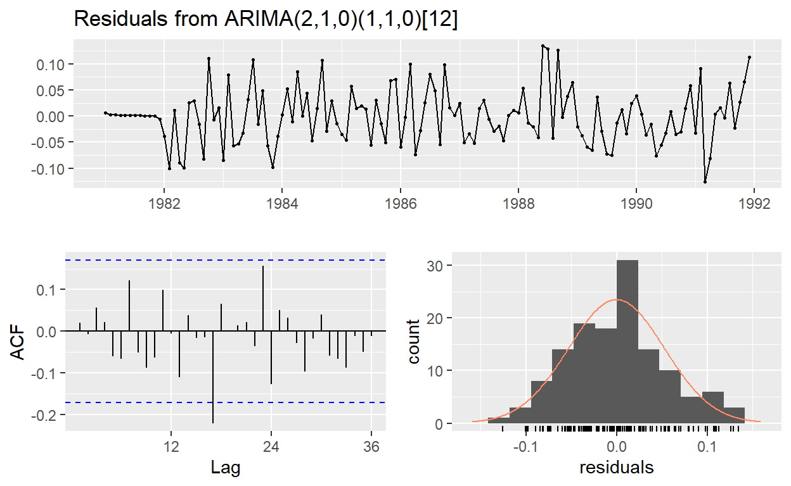
Ljung-Box test
data: Residuals from ARIMA(2,1,0)(1,1,0)[12]
Q* = 24.531, df = 21, p-value = 0.268
Model df: 3. Total lags used: 24과대 적합
\(ARIMA(2, 1, 0)(1, 1, 0)_{12}\)
confint(Arima(lntour, order = c(2, 1, 1),
seasonal = list(order = c(1, 1, 0), period = 12))) # 추가된 모수 비유의 NA 2.5 % 97.5 %
ar1 -1.3501035 0.003178749
ar2 -0.6346756 0.214711438
ma1 -0.7557297 0.634389249
sar1 -0.6863941 -0.367535856confint(Arima(lntour, order = c(3, 1, 0),
seasonal = list(order = c(1, 1, 0), period = 12))) # 추가된 모수 비유의 NA 2.5 % 97.5 %
ar1 -0.9181728 -0.55167096
ar2 -0.4827245 -0.03043428
ar3 -0.2034879 0.16766886
sar1 -0.6863178 -0.36759502# fit4 잠정 후보 모형 NA잠정 후보 모형 AIC, BIC 비교
최종모형 : \(ARIMA(2, 1, 0)(1, 1, 0)_{12}\)
c(fit1_1$aic, fit1_1$bic)
[1] -335.1006 -323.9841c(fit1_2$aic, fit1_2$bic)
[1] -335.4349 -324.3184c(fit2_1$aic, fit2_1$bic)
[1] -337.3768 -326.2603c(fit2_2$aic, fit2_2$bic)
[1] -337.7425 -326.6260c(fit3$aic, fit3$bic)
[1] -335.8118 -324.6953c(fit4$aic, fit4$bic)
[1] -338.0812 -326.9647# fit4 최종 모형으로 선택 NA예측
로그 변환된 자료에 대한 예측
fit4 <- Arima(lntour, order = c(2, 1, 0),
seasonal = list(order = c(1, 1, 0), period = 12))
plot(forecast(fit4, h = 12))
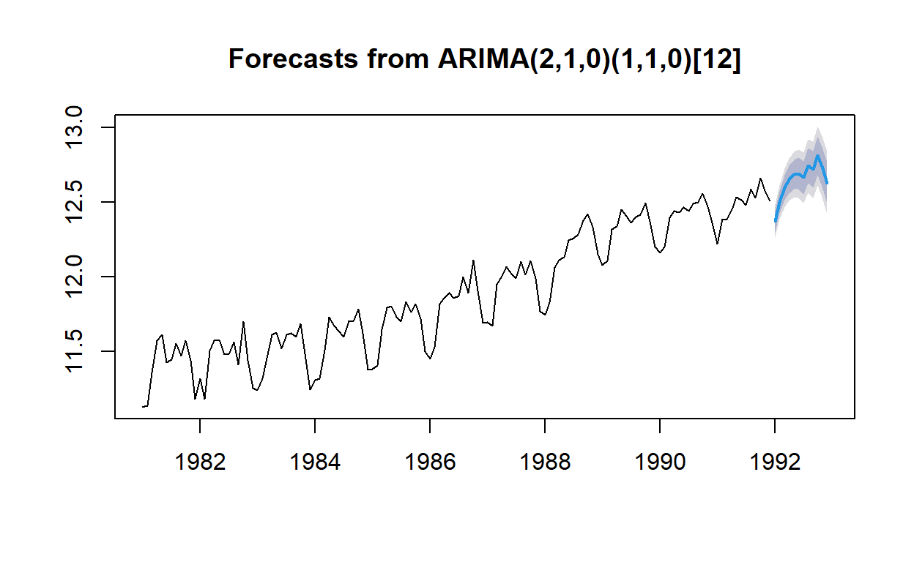
원자료에 대한 예측
fit4_1 <- Arima(tour.ts, order = c(2, 1, 0),
seasonal = list(order = c(1, 1, 0), period = 12), lambda = 0)
plot(forecast(fit4_1, h = 12))
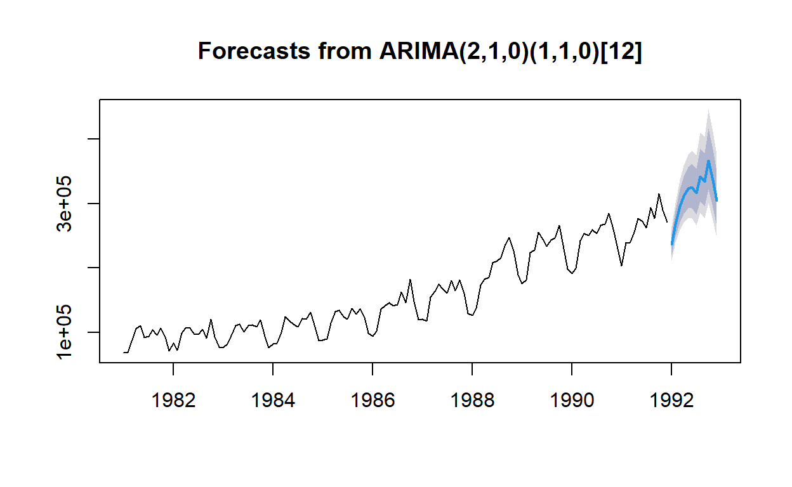
실제값과 예측값 비교
tour92 <- scan('tour92.txt')
tour92 <- ts(tour92, start = 1992, freq = 12)
fore_arima <- forecast(fit4_1, h = 12, level = 95)
plot(fore_arima)
new_t <- seq(1992, by = 1/12, length = 12)
lines(new_t, tour92, col = 'red')
accuracy(fore_arima, tour92)
ME RMSE MAE MPE MAPE
Training set -101.7388 9382.833 6691.828 -0.1666852 4.06514
Test set -44218.3189 51964.159 44218.319 -16.5746164 16.57462
MASE ACF1 Theil's U
Training set 0.3697756 0.1129040 NA
Test set 2.4434060 0.6654927 1.920409회귀모형을 이용한 시계열분석
1차 추세계절 회귀모형
2차 추세모형 or 강한 상관관계
Time <- time(lntour)
Month <- cycle(lntour)
fit1 <- lm(lntour~Time + factor(Month) + 0)
summary(fit1)
Call:
lm(formula = lntour ~ Time + factor(Month) + 0)
Residuals:
Min 1Q Median 3Q Max
-0.16248 -0.06957 -0.01932 0.07319 0.22759
Coefficients:
Estimate Std. Error t value Pr(>|t|)
Time 0.1195 0.0025 47.78 <2e-16 ***
factor(Month)1 -225.6597 4.9657 -45.44 <2e-16 ***
factor(Month)2 -225.6373 4.9659 -45.44 <2e-16 ***
factor(Month)3 -225.4362 4.9661 -45.40 <2e-16 ***
factor(Month)4 -225.3477 4.9663 -45.38 <2e-16 ***
factor(Month)5 -225.3286 4.9665 -45.37 <2e-16 ***
factor(Month)6 -225.3848 4.9667 -45.38 <2e-16 ***
factor(Month)7 -225.3999 4.9669 -45.38 <2e-16 ***
factor(Month)8 -225.3277 4.9671 -45.36 <2e-16 ***
factor(Month)9 -225.3804 4.9673 -45.37 <2e-16 ***
factor(Month)10 -225.2771 4.9675 -45.35 <2e-16 ***
factor(Month)11 -225.4349 4.9677 -45.38 <2e-16 ***
factor(Month)12 -225.6338 4.9679 -45.42 <2e-16 ***
---
Signif. codes: 0 '***' 0.001 '**' 0.01 '*' 0.05 '.' 0.1 ' ' 1
Residual standard error: 0.09084 on 119 degrees of freedom
Multiple R-squared: 0.9999, Adjusted R-squared: 0.9999
F-statistic: 1.741e+05 on 13 and 119 DF, p-value: < 2.2e-16checkresiduals(fit1)
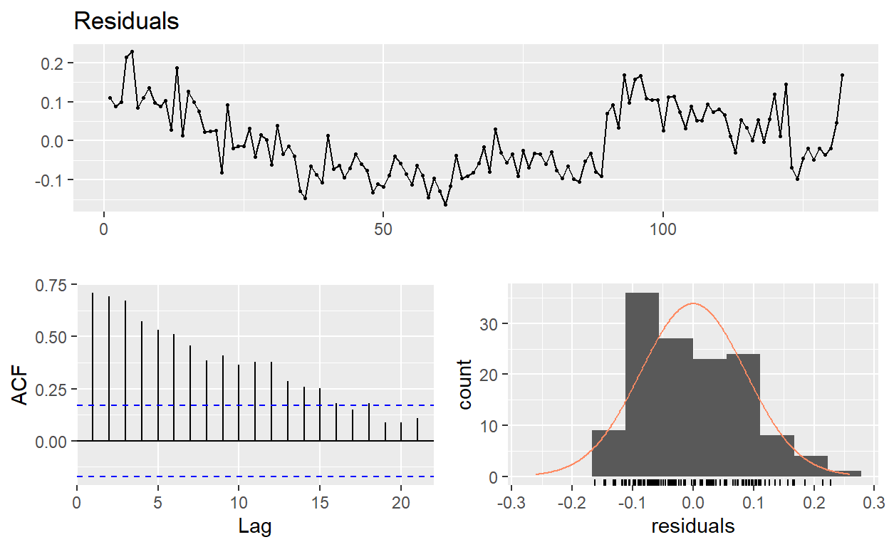
Breusch-Godfrey test for serial correlation of order up to 16
data: Residuals
LM test = 87.23, df = 16, p-value = 8.074e-122차 추세모형
양의 상관관계 존재
fit2 <- lm(lntour~Time + I(Time^2) + factor(Month) + 0)
checkresiduals(fit2)
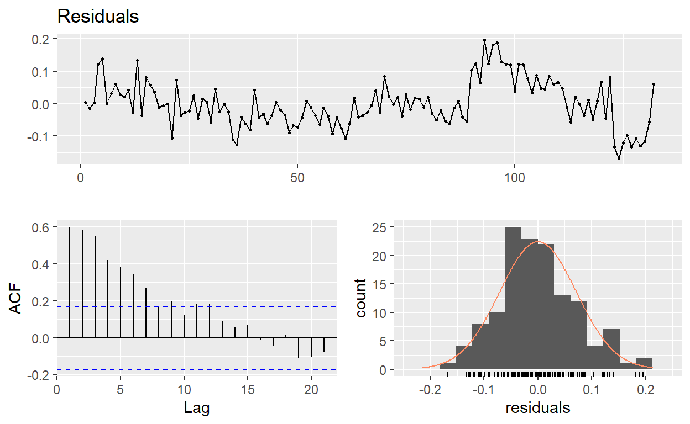
Breusch-Godfrey test for serial correlation of order up to 17
data: Residuals
LM test = 69.78, df = 17, p-value = 2.354e-08오차모형
AR(3) 식별
Resid <- fit2$residuals
ggtsdisplay(Resid, lag.max = 48)
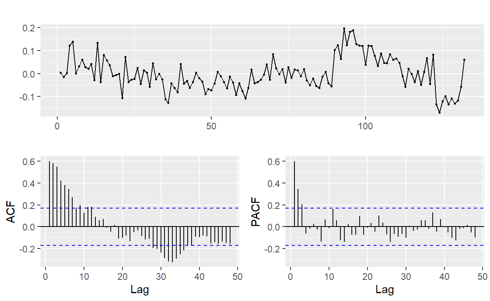
오차 모형 적합
2.5 % 97.5 %
ar1 0.14262044 0.4814755
ar2 0.09449107 0.4352225
ar3 0.03698488 0.3775787checkresiduals(fit_r1)
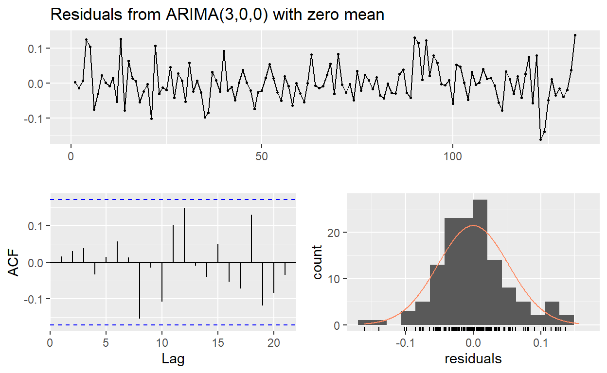
Ljung-Box test
data: Residuals from ARIMA(3,0,0) with zero mean
Q* = 6.0871, df = 7, p-value = 0.5296
Model df: 3. Total lags used: 10 2.5 % 97.5 %
ar1 -0.55000199 0.7343275
ar2 0.04907373 0.6498214
ar3 0.03680223 0.5309914
ma1 -0.43556251 0.8971931 2.5 % 97.5 %
ar1 0.15430624 0.5022553
ar2 0.10729112 0.4628918
ar3 0.04984801 0.4040409
ar4 -0.24959477 0.10914372차 추세계절 + AR(3) 오차 회귀모형
역행렬 계산 안될 경우 1차 추세모형 대신 시도
fit_x <- model.matrix(fit2)
f1 <- Arima(tour.ts, order = c(3, 0, 0), include.mean = FALSE, xreg = fit_x, lambda = 0)
1차 추세 계절 모형의 오차 모형
Resid <- fit1$residuals
ggtsdisplay(Resid, lag.max = 48) # AR(3)
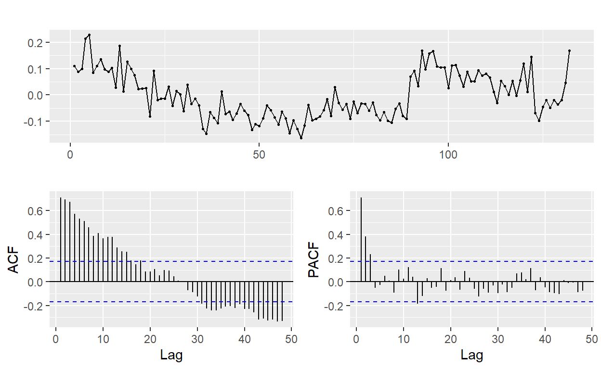
오차 모형 적합
\(AR(3)\) 모형 확정
2.5 % 97.5 %
ar1 0.17792211 0.5181811
ar2 0.12261593 0.4656961
ar3 0.06598099 0.4075507checkresiduals(fit_r2)
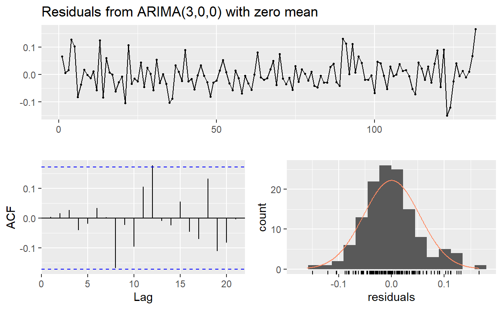
Ljung-Box test
data: Residuals from ARIMA(3,0,0) with zero mean
Q* = 6.0104, df = 7, p-value = 0.5385
Model df: 3. Total lags used: 10 2.5 % 97.5 %
ar1 -0.42304400 0.8008538
ar2 0.04529015 0.6846541
ar3 0.03132570 0.5676929
ma1 -0.46971226 0.8080546 2.5 % 97.5 %
ar1 0.18467678 0.5365285
ar2 0.12910312 0.4899985
ar3 0.07264062 0.4313678
ar4 -0.23078402 0.13147671차 추세계절 + AR(3) 오차 회귀모형
fit_x <- model.matrix(fit1)
f1 <- Arima(tour.ts, order = c(3, 0, 0), include.mean = FALSE, xreg = fit_x, lambda = 0)
예측
new.t <- time(ts(start = c(1992, 1), end = c(1992, 12), freq = 12))
new.x <- cbind(new.t, diag(rep(1, 12)))
fore_reg <- forecast(f1, xreg = new.x, level = 95)
plot(fore_reg)
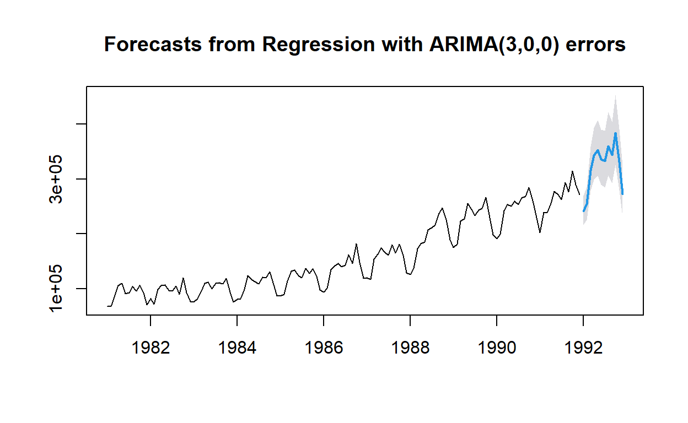
예측 성능 비교
accuracy(fore_arima, tour92)
ME RMSE MAE MPE MAPE
Training set -101.7388 9382.833 6691.828 -0.1666852 4.06514
Test set -44218.3189 51964.159 44218.319 -16.5746164 16.57462
MASE ACF1 Theil's U
Training set 0.3697756 0.1129040 NA
Test set 2.4434060 0.6654927 1.920409accuracy(fore_reg, tour92)
ME RMSE MAE MPE MAPE
Training set 120.1524 9569.667 6442.998 -0.3146017 4.019269
Test set -53052.9409 61306.604 54979.697 -19.5490298 20.273884
MASE ACF1 Theil's U
Training set 0.3560258 0.1121612 NA
Test set 3.0380559 0.5282178 2.260151